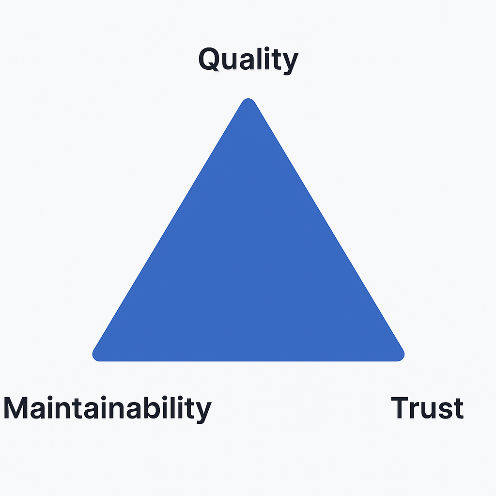
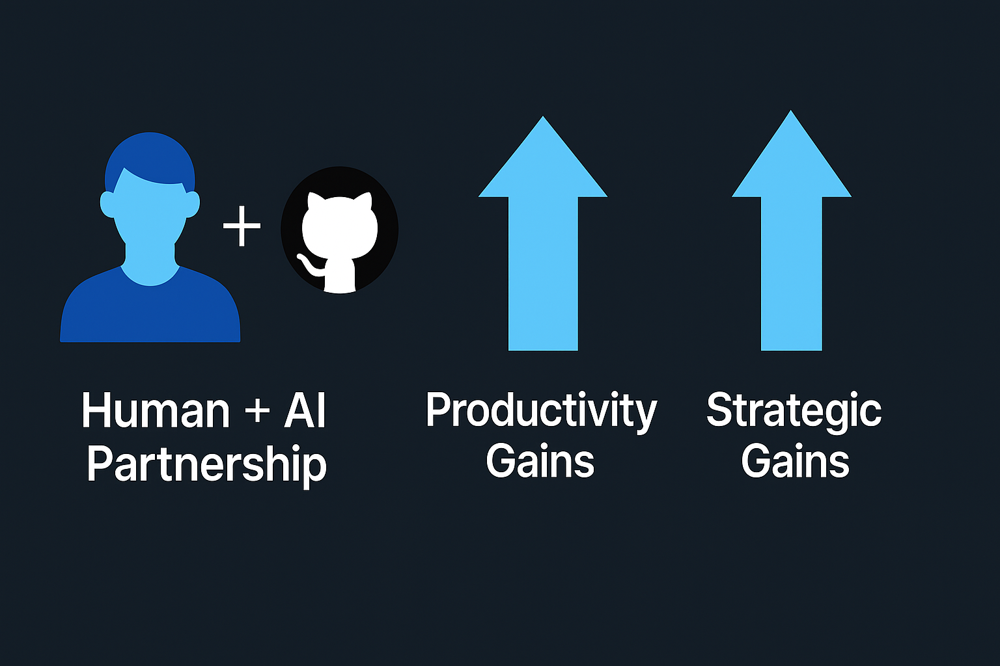

Presentation
How AI Tools Improve Productivity
in Development Workflows
A focused story: personal experience → industry impact → guardrails → what’s next.
Personal example
My Experience with Copilot
- Started from a PRD and GitHub Issues to give context
- Copilot scaffolded the project, then generated unit tests
- Also created the Dockerfile and Actions workflow
- Hours saved were reinvested into higher-value work
Why it matters
Strategic Impact
- Faster delivery of features customers need
- Stronger resilience via better test coverage
- Better developer experience and retention
Framing: AI removes friction so teams focus on higher-value work.
Balance
Guardrails & Oversight
- Validate AI outputs against team standards
- Prevent inconsistency and tech debt with reviews and tests
- Build trust with human-in-the-loop and clear usage guidelines

Closing
Looking Ahead
- Human + AI partnership
- Productivity gains today
- Strategic gains tomorrow

The real question is how we reinvest the time AI saves.